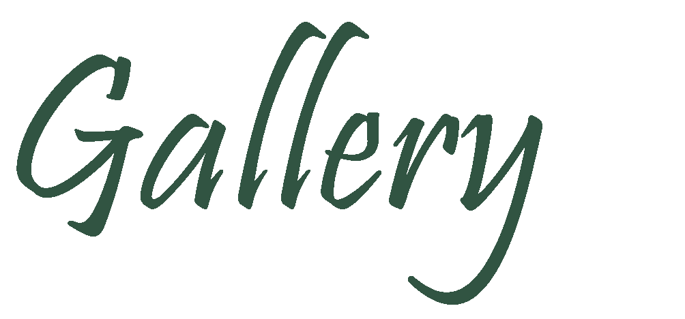

HOME
SASS merupakan singkatan dari Syntactically
Awesome Style Sheet. SASS adalah sebuah
bahasa pra-processor(preprocessor) untuk CSS
SASS bukanlah bahasa pemrograman, SASS adalah
bahasa yang akan membuat CSS.
SASS memberikan fitur yang tidak dimiliki CSS
seperti variabel, nesting, mixins, inheritance,
dan lain-lain.
Fitur-fitur ini akan membuat kita menulis kode CSS
yang lebih rapi dan bersih dan juga menghindari
penulisan kode yang berulang.
Contact
Contact Via Email
Hubungi kami dengan mengirim email ke alamat : daniel.118140080@student.itera.ac.id
Contact Via Social Media
Kontak via email diatas lebih diutamakan. Kami juga bisa dihubungi via social media berikut:

+62 822-7225-3779

@daniel_sipangkar
Gallery
About Me
Nama : Daniel Sipangkar
NIM : 118140080
Institut Teknologi Sumatera